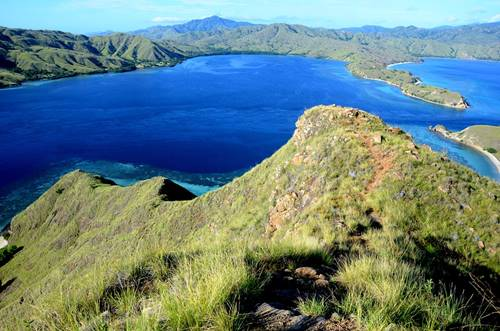
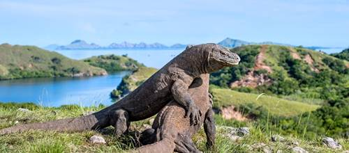

7 Fakta Unik Pulau Komodo

Berada di Gugusan Kepulauan Nusa Tenggara, Pulau Komodo menjadi salah satu pulau kebanggaan Indonesia. Berbagai predikat diraih oleh pulau yang ditemukan pada 1910 ini. Salah satu pulau di Nusa Tenggara Timur ini menjadi tujuan wisatawan dalam negeri maupun luar negeri. Siapa sangka, Pulau Komodo memiliki beberapa fakta menarik seperti berikut ini.
1. Habitat Hewan Purba
Pulau Komodo merupakan habitat bagi hewan purba yang telah ada sejak ratusan tahun lalu. Salah satunya komodo. Menurut penelitian yang dilakukan oleh Universitas Melbourne pada 2009 silam, komodo merupakan spesies yang hidup di Australia. Namun, mereka bermigrasi dari Australia menuju Kepulauan Sunda Kecil. Komodo bertahan di Nusa Tenggara Timur hingga saat ini.
2. Situs Warisan Dunia

Pada 1991, UNESCO menetapkan Taman Nasional Komodo sebagai situs warisan dunia. Penetapan tersebut dikarenakan Pulau Komodo termasuk dalam kategori situs alam yang memiliki fenomena dan estetika yang langka. Selain itu, Pulau Komodo juga dijadikan Cagar Manusia dan Biosfer pada 1977.
3. Tujuan Wisata dan Penelitian

Tak hanya wisata alamnya, Pulau Komodo juga dijadikan lokasi dan obyek penelitian para ilmuwan dari berbagai negara. Mereka meneliti komodo serta flora dan fauna yang hidup di sana. Para ilmuwan juga tertarik meneliti perkembangan evolusi hewan seperti komodo. Komodo dipercaya sebagai hewan purba yang hanya ada di Indonesia.
4. Salah Satu dari 7 Keajaiban Dunia
Pulau Komodo lagi-lagi menjadi kebanggaan Indonesia karena terpilih sebagai salah satu 7 keajaiban dunia pada 2011. Penentuan ini berdasarkan hasil pemungutan suara yang diikuti masyarakat dari seluruh belahan dunia. Bahkan, Pulau Komodo mendapatkan suara terbanyak!
5. Termasuk dalam 10 Besar Destinasi Terbaik di Dunia

Majalah terkemuka National Geographic edisi Juli 2017 mengangkat headline "100 Best Destinations Around the World in Four Seasons". Dalam majalah tersebut, Pulau Komodo masuk dalam daftar 10 destinasi terbaik di dunia tersebut. Sungguh membanggakan!
6. Sangat Mudah Bertemu Komodo
Jika kamu liburan di Pulau Komodo ini, dengan mudahnya kamu akan bertemu beberapa ekor komodo. Mereka tidak berjalan secara berkelompok. Namun, mereka akan sering terlihat di sekitar pantai maupun di pinggir jalan. Jadi, kamu harus hati-hati jika bertemu komodo. Kamu pun harus ditemani pemandu tur atau penjaga pantai, terutama saat akan bertemu dengan komodo.
7. Berwisata di Pantai Merah
Selain memiliki prestasi sedemikian rupa, Pulau Komodo juga memiliki keindahan alam yang tak terkira. Salah satunya adalah Pantai Merah atau yang lebih dikenal dengan Pink Beach ini. Pantai ini memiliki pasir berwarna merah muda yang berbeda dengan kebanyakan pantai lainnya. Keren banget deh pantainya!
Itu dia beberapa fakta menarik seputar Pulau Komodo yang perlu kamu ketahui. Membanggakan sekali, kan? Apakah kamu jadi ingin mengunjungi pulau ini?
Source : travel.idntimes.com